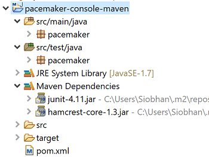
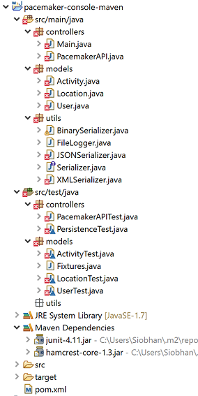
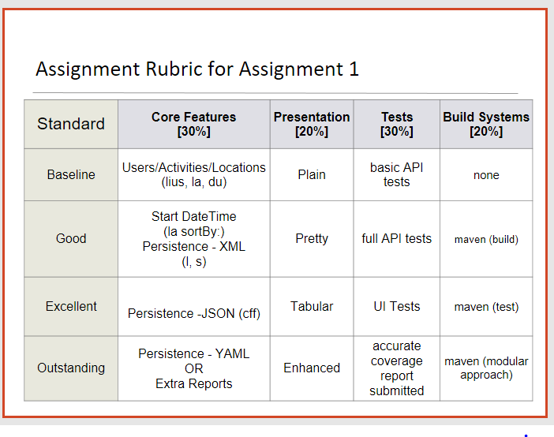

Objectives
In the previous lab, you installed Maven. In this lab, we will incorporate Maven into our pacemaker-console-lab05 solution. We will also look at using both JUnit4 and JUnit5 in our pacemaker app.
Verify your Maven Installation
Visit the main Maven site:
and review some of the general introductions.
Then, enter the command mvn -version on your command shell. You should see output similar to this:
C:\Users\Siobhan>mvn -version
Apache Maven 3.5.4 (1edded0938998edf8bf061f1ceb3cfdeccf443fe; 2018-06-17T19:33:14+01:00)
Maven home: C:\dev\apache-maven-3.5.4\bin\..
Java version: 10.0.2, vendor: Oracle Corporation, runtime: C:\Program Files\Java\jdk-10.0.2
Default locale: en_IE, platform encoding: Cp1252
OS name: "windows 10", version: "10.0", arch: "amd64", family: "windows"
C:\Users\Siobhan>Note the version of the JDK that Maven uses. There are significant differences between versions 1.6, 1.7, 1.8 and 1.9. We will discuss some of these differences in later lectures.
If the above mvn command isn't recognised, revisit the steps below to install / fix your installation (maybe you installed it, but your path variables are not right).
Steps involved in installing Maven
Download the project archive (note: download the binary and not the source):
Follow these installations instructions:
5-minute Maven Guide
In this step, you will work through the Maven example we covered in lectures.
Navigate to this 5 minute guide:
and, in your eclipse workspace directory, perform the steps involved in the Creating a Project section.
This will build a starter app called my-app. Familiarise yourself with the struture of the generated folders and, in particular, the pom.xml.
Build the app
Follow the steps in the Build the project section. If your app doesn't compile, refactor your pom.xml to be this and try the mvn package command again:
<project xmlns="http://maven.apache.org/POM/4.0.0" xmlns:xsi="http://www.w3.org/2001/XMLSchema-instance"
xsi:schemaLocation="http://maven.apache.org/POM/4.0.0 http://maven.apache.org/xsd/maven-4.0.0.xsd">
<modelVersion>4.0.0</modelVersion>
<groupId>com.mycompany.app</groupId>
<artifactId>my-app</artifactId>
<version>1.0-SNAPSHOT</version>
<packaging>jar</packaging>
<properties>
<maven.compiler.source>1.8</maven.compiler.source>
<maven.compiler.target>1.8</maven.compiler.target>
</properties>
<dependencies>
<dependency>
<groupId>junit</groupId>
<artifactId>junit</artifactId>
<version>4.12</version>
<scope>test</scope>
</dependency>
</dependencies>
</project>Run the app
Finish the tutorial by executing the generated Jar file. "Hello World!" should be printed to the console.
Build the site
To generate the site relating to the project, enter the command mvn site. If you get a BUILD FAILURE, include the following plugin in your pom.xml file and try the command again:
<build>
<plugins>
<plugin>
<groupId>org.apache.maven.plugins</groupId>
<artifactId>maven-site-plugin</artifactId>
<version>3.7.1</version>
</plugin>
</plugins>
</build>Check that a site folder has been created in the target folder. Click on the index.html file to view the generated site.
More information
For information on writing pom.xml, please visit:
Pacemaker with Maven Project
Review pacemaker project
You should have the pacemaker project from lab05 in your workspace. If you don't have a lab05 pacemaker project, you can download it from here:
We will now convert this to a Maven-based project and use the Maven Build System to manage our dependencies (i.e. components, JUnit versions, etc).
Create a starter Maven Project
Navigate to a suitable folder (i.e. your eclipse workspace that you plan to use for maven projects) and enter the following command to create a starter maven project called pacemaker-console-maven:
mvn archetype:generate -DarchetypeGroupId=org.apache.maven.archetypes -DarchetypeArtifactId=maven-archetype-quickstart -DgroupId=pacemaker -DartifactId=pacemaker-console-mavenIf you are asked to enter versions for certain items, just hit the enter key. Eventually it should complete successfully.
The command will have created the following project structure:

The key file to inspect is the generated pom.xml...it will hold something similar to this:
<?xml version="1.0" encoding="UTF-8"?>
<project xmlns="http://maven.apache.org/POM/4.0.0" xmlns:xsi="http://www.w3.org/2001/XMLSchema-instance"
xsi:schemaLocation="http://maven.apache.org/POM/4.0.0 http://maven.apache.org/xsd/maven-4.0.0.xsd">
<modelVersion>4.0.0</modelVersion>
<groupId>pacemaker</groupId>
<artifactId>pacemaker-console-maven</artifactId>
<version>1.0-SNAPSHOT</version>
<name>pacemaker-console-maven</name>
<!-- FIXME change it to the project's website -->
<url>http://www.example.com</url>
<properties>
<project.build.sourceEncoding>UTF-8</project.build.sourceEncoding>
<maven.compiler.source>1.7</maven.compiler.source>
<maven.compiler.target>1.7</maven.compiler.target>
</properties>
<dependencies>
<dependency>
<groupId>junit</groupId>
<artifactId>junit</artifactId>
<version>4.11</version>
<scope>test</scope>
</dependency>
</dependencies>
<build>
<pluginManagement><!-- lock down plugins versions to avoid using Maven defaults (may be moved to parent pom) -->
<plugins>
<plugin>
<artifactId>maven-clean-plugin</artifactId>
<version>3.0.0</version>
</plugin>
<!-- see http://maven.apache.org/ref/current/maven-core/default-bindings.html#Plugin_bindings_for_jar_packaging -->
<plugin>
<artifactId>maven-resources-plugin</artifactId>
<version>3.0.2</version>
</plugin>
<plugin>
<artifactId>maven-compiler-plugin</artifactId>
<version>3.7.0</version>
</plugin>
<plugin>
<artifactId>maven-surefire-plugin</artifactId>
<version>2.20.1</version>
</plugin>
<plugin>
<artifactId>maven-jar-plugin</artifactId>
<version>3.0.2</version>
</plugin>
<plugin>
<artifactId>maven-install-plugin</artifactId>
<version>2.5.2</version>
</plugin>
<plugin>
<artifactId>maven-deploy-plugin</artifactId>
<version>2.8.2</version>
</plugin>
</plugins>
</pluginManagement>
</build>
</project>Open your project in Eclipse
Open Eclipse. On the menu bar, choose File, then Import....
When the dialog opens, select Maven, then Existing Maven Projects. Locate your pacemaker-console-maven project and import it.
It should show up on your workspace like this:

Older versions of Eclipse ONLY
If you are using an older version of Eclipse, you may need to perform these steps instead of the above import.
- On the command line, change into the pacemaker-console-maven folder and enter the following command:
mvn eclipse:eclipseThis will generate an eclipse project from the pom.
In eclipse, import this project (as an existing project). It should show up on your workspace like the image above.
Copy paste sources into new project
Within eclipse, you should be able to copy/paste all of the sources (the .java files only) into the appropriate folder in the new project. Also, delete the maven generated pacemaker packages:

There are a significant number of errors however, which we will fix in the next step. These errors have arisen because we haven't yet included our components (e.g. XStream, Cliche, etc) in the project. We are going to get Maven to manage this for us!
Incorporate Correct Library References
Inspect the pacemaker-console-maven folder, open and review the "pom.xml" file.
<?xml version="1.0" encoding="UTF-8"?>
<project xmlns="http://maven.apache.org/POM/4.0.0" xmlns:xsi="http://www.w3.org/2001/XMLSchema-instance"
xsi:schemaLocation="http://maven.apache.org/POM/4.0.0 http://maven.apache.org/xsd/maven-4.0.0.xsd">
<modelVersion>4.0.0</modelVersion>
<groupId>pacemaker</groupId>
<artifactId>pacemaker-console-maven</artifactId>
<version>1.0-SNAPSHOT</version>
<name>pacemaker-console-maven</name>
<!-- FIXME change it to the project's website -->
<url>http://www.example.com</url>
<properties>
<project.build.sourceEncoding>UTF-8</project.build.sourceEncoding>
<maven.compiler.source>1.7</maven.compiler.source>
<maven.compiler.target>1.7</maven.compiler.target>
</properties>
<dependencies>
<dependency>
<groupId>junit</groupId>
<artifactId>junit</artifactId>
<version>4.11</version>
<scope>test</scope>
</dependency>
</dependencies>
<build>
<pluginManagement><!-- lock down plugins versions to avoid using Maven defaults (may be moved to parent pom) -->
<plugins>
<plugin>
<artifactId>maven-clean-plugin</artifactId>
<version>3.0.0</version>
</plugin>
<!-- see http://maven.apache.org/ref/current/maven-core/default-bindings.html#Plugin_bindings_for_jar_packaging -->
<plugin>
<artifactId>maven-resources-plugin</artifactId>
<version>3.0.2</version>
</plugin>
<plugin>
<artifactId>maven-compiler-plugin</artifactId>
<version>3.7.0</version>
</plugin>
<plugin>
<artifactId>maven-surefire-plugin</artifactId>
<version>2.20.1</version>
</plugin>
<plugin>
<artifactId>maven-jar-plugin</artifactId>
<version>3.0.2</version>
</plugin>
<plugin>
<artifactId>maven-install-plugin</artifactId>
<version>2.5.2</version>
</plugin>
<plugin>
<artifactId>maven-deploy-plugin</artifactId>
<version>2.8.2</version>
</plugin>
</plugins>
</pluginManagement>
</build>
</project>Modify the "url" and "version" elements to be more consistent with our project:
<version>1.0</version>
<url>www.wit.ie</url>A note on Version VS SNAPSHOT:
- Version: if Maven previously downloaded the specified version, say 1.0, it will never try to download a newer 1.0 that is available in repository. To download the updated code, the version needs to be upgraded to 1.1.
- SNAPSHOT: Maven will automatically fetch the latest SNAPSHOT (e.g. 1.0-SNAPSHOT) everytime the team builds their project.
Java version
Let's ensure that we are using Java10 for our application. We can specifically enable this version in the
<properties>
<project.build.sourceEncoding>UTF-8</project.build.sourceEncoding>
<maven.compiler.source>1.10</maven.compiler.source>
<maven.compiler.target>1.10</maven.compiler.target>
</properties>As the JDK is not a
JUnit version
The junit version in the generated POM is an older version (4.11). To include JUnit5 as a dependency, we need to make a few changes.
First, delete the JUnit4 dependency:
<dependency>
<groupId>junit</groupId>
<artifactId>junit</artifactId>
<version>4.11</version>
<scope>test</scope>
</dependency>Finally, edit the pom.xml to include the following JUnit5 dependencies:
<!-- included for JUnit 5 -->
<dependency>
<!-- JUnit 5: this allows us to write tests using JUnit5 -->
<groupId>org.junit.jupiter</groupId>
<artifactId>junit-jupiter-api</artifactId>
<version>5.1.0</version>
<scope>test</scope>
</dependency>
<dependency>
<!-- JUnit 5: this runs tests which use JUnit5 -->
<groupId>org.junit.jupiter</groupId>
<artifactId>junit-jupiter-engine</artifactId>
<version>5.1.0</version>
<scope>test</scope>
</dependency>
<dependency>
<!-- JUnit 5: provides a public API for configuring and launching tests. This API
is typically used by IDEs and build tools. -->
<groupId>org.junit.platform</groupId>
<artifactId>junit-platform-launcher</artifactId>
<version>1.1.0</version>
<scope>test</scope>
</dependency>
<dependency>
<!-- JUnit 5: dependency allows us to run tests and test suites in a JUnit 4 environment. -->
<groupId>org.junit.platform</groupId>
<artifactId>junit-platform-runner</artifactId>
<version>1.1.0</version>
<scope>test</scope>
</dependency>Incorporating our components/libraries
We are using a range of libraries (Cliche, Guava, XStream, Ascii tables), which we must incorporate as dependencies into the pom. Note that we are not including the Ascii Tables component in the dependencies...we will add the Jar file from last weeks labs as a local M2 repo file instead (next step).
<!-- https://mvnrepository.com/artifact/com.google.guava/guava -->
<dependency>
<groupId>com.google.guava</groupId>
<artifactId>guava</artifactId>
<version>23.0</version>
</dependency>
<!-- https://mvnrepository.com/artifact/com.thoughtworks.xstream/xstream -->
<dependency>
<groupId>com.thoughtworks.xstream</groupId>
<artifactId>xstream</artifactId>
<version>1.4.10</version>
</dependency>
<!-- https://mvnrepository.com/artifact/com.googlecode.clichemaven/cliche -->
<dependency>
<groupId>com.googlecode.clichemaven</groupId>
<artifactId>cliche</artifactId>
<version>110413</version>
</dependency>Complete POM
The full version of the POM should look like this:
<?xml version="1.0" encoding="UTF-8"?>
<project xmlns="http://maven.apache.org/POM/4.0.0"
xmlns:xsi="http://www.w3.org/2001/XMLSchema-instance"
xsi:schemaLocation="http://maven.apache.org/POM/4.0.0 http://maven.apache.org/xsd/maven-4.0.0.xsd">
<modelVersion>4.0.0</modelVersion>
<groupId>pacemaker</groupId>
<artifactId>pacemaker-console-maven</artifactId>
<version>1.0</version>
<name>pacemaker-console-maven</name>
<url>www.wit.ie</url>
<properties>
<project.build.sourceEncoding>UTF-8</project.build.sourceEncoding>
<maven.compiler.source>1.10</maven.compiler.source>
<maven.compiler.target>1.10</maven.compiler.target>
</properties>
<dependencies>
<!-- https://mvnrepository.com/artifact/com.google.guava/guava -->
<dependency>
<groupId>com.google.guava</groupId>
<artifactId>guava</artifactId>
<version>23.0</version>
</dependency>
<!-- https://mvnrepository.com/artifact/com.thoughtworks.xstream/xstream -->
<dependency>
<groupId>com.thoughtworks.xstream</groupId>
<artifactId>xstream</artifactId>
<version>1.4.10</version>
</dependency>
<!-- https://mvnrepository.com/artifact/com.googlecode.clichemaven/cliche -->
<dependency>
<groupId>com.googlecode.clichemaven</groupId>
<artifactId>cliche</artifactId>
<version>110413</version>
</dependency>
<!-- included for JUnit 5 -->
<dependency>
<!-- JUnit 5: this allows us to write tests using JUnit5 -->
<groupId>org.junit.jupiter</groupId>
<artifactId>junit-jupiter-api</artifactId>
<version>5.1.0</version>
<scope>test</scope>
</dependency>
<dependency>
<!-- JUnit 5: this runs tests which use JUnit5 -->
<groupId>org.junit.jupiter</groupId>
<artifactId>junit-jupiter-engine</artifactId>
<version>5.1.0</version>
<scope>test</scope>
</dependency>
<dependency>
<!-- JUnit 5: provides a public API for configuring and launching tests. This API
is typically used by IDEs and build tools. -->
<groupId>org.junit.platform</groupId>
<artifactId>junit-platform-launcher</artifactId>
<version>1.1.0</version>
<scope>test</scope>
</dependency>
<dependency>
<!-- JUnit 5: dependency allows us to run tests and test suites in a JUnit 4 environment. -->
<groupId>org.junit.platform</groupId>
<artifactId>junit-platform-runner</artifactId>
<version>1.1.0</version>
<scope>test</scope>
</dependency>
</dependencies>
<build>
<pluginManagement><!-- lock down plugins versions to avoid using Maven
defaults (may be moved to parent pom) -->
<plugins>
<plugin>
<artifactId>maven-clean-plugin</artifactId>
<version>3.0.0</version>
</plugin>
<!-- see http://maven.apache.org/ref/current/maven-core/default-bindings.html#Plugin_bindings_for_jar_packaging -->
<plugin>
<artifactId>maven-resources-plugin</artifactId>
<version>3.0.2</version>
</plugin>
<plugin>
<artifactId>maven-compiler-plugin</artifactId>
<version>3.7.0</version>
</plugin>
<plugin>
<artifactId>maven-surefire-plugin</artifactId>
<version>2.22.0</version>
<dependencies>
<dependency>
<groupId>org.ow2.asm</groupId>
<artifactId>asm</artifactId>
<version>6.1.1</version>
</dependency>
</dependencies>
</plugin>
<plugin>
<artifactId>maven-jar-plugin</artifactId>
<version>3.0.2</version>
</plugin>
<plugin>
<artifactId>maven-install-plugin</artifactId>
<version>2.5.2</version>
</plugin>
<plugin>
<artifactId>maven-deploy-plugin</artifactId>
<version>2.8.2</version>
</plugin>
</plugins>
</pluginManagement>
</build>
</project>To ensure that the maven file is correct, return to your command prompt and enter the following command:
mvn validateThis will pick up any format errors in the POM, although it will not check availability of the dependencies.
C:\Users\Siobhan\eclipse-workspace\pacemaker-console-maven>mvn validate
[INFO] Scanning for projects...
[INFO]
[INFO] -----------------< pacemaker:pacemaker-console-maven >------------------
[INFO] Building pacemaker-console-maven 1.0
[INFO] --------------------------------[ jar ]---------------------------------
[INFO] ------------------------------------------------------------------------
[INFO] BUILD SUCCESS
[INFO] ------------------------------------------------------------------------
[INFO] Total time: 0.235 s
[INFO] Finished at: 2018-10-03T20:31:46+01:00
[INFO] ------------------------------------------------------------------------
C:\Users\Siobhan\eclipse-workspace\pacemaker-console-maven>Build
Attempting to compile and test
In your command prompt/shell, type in mvn test. It will fail because maven cannot resolve the ASCII Table dependency:
[INFO] ------------------------------------------------------------------------
[INFO] BUILD FAILURE
[INFO] ------------------------------------------------------------------------
[INFO] Total time: 3.704 s
[INFO] Finished at: 2018-10-03T20:35:07+01:00
[INFO] ------------------------------------------------------------------------
[ERROR] Failed to execute goal org.apache.maven.plugins:maven-compiler-plugin:3.7.0:compile (default-compile) on project pacemaker-console-maven: Compilation failure: Compilation failure:
[ERROR] /C:/Users/Siobhan/eclipse-workspace/pacemaker-console-maven/src/main/java/controllers/Main.java:[7,34] package com.bethecoder.ascii_table does not exist
[ERROR] /C:/Users/Siobhan/eclipse-workspace/pacemaker-console-maven/src/main/java/controllers/Main.java:[8,39] package com.bethecoder.ascii_table.impl does not exist
[ERROR] /C:/Users/Siobhan/eclipse-workspace/pacemaker-console-maven/src/main/java/controllers/Main.java:[9,39] package com.bethecoder.ascii_table.spec does not exist
[ERROR] /C:/Users/Siobhan/eclipse-workspace/pacemaker-console-maven/src/main/java/controllers/Main.java:[64,17] cannot find symbol
[ERROR] symbol: class IASCIITableAware
[ERROR] location: class controllers.Main
[ERROR] /C:/Users/Siobhan/eclipse-workspace/pacemaker-console-maven/src/main/java/controllers/Main.java:[64,56] cannot find symbol
[ERROR] symbol: class CollectionASCIITableAware
[ERROR] location: class controllers.Main
[ERROR] /C:/Users/Siobhan/eclipse-workspace/pacemaker-console-maven/src/main/java/controllers/Main.java:[65,17] cannot find symbol
[ERROR] symbol: variable ASCIITable
[ERROR] location: class controllers.Main
[ERROR] -> [Help 1]
[ERROR]
[ERROR] To see the full stack trace of the errors, re-run Maven with the -e switch.
[ERROR] Re-run Maven using the -X switch to enable full debug logging.
[ERROR]
[ERROR] For more information about the errors and possible solutions, please read the following articles:
[ERROR] [Help 1] http://cwiki.apache.org/confluence/display/MAVEN/MojoFailureException
C:\Users\Siobhan\eclipse-workspace\pacemaker-console-maven>Resolving ASCII Table Issue
We have a local ASCII Table Jar (from last weeks labs) that we want to include in project. Note that we could use the version that is in the public maven repo, however, we want to demonstrate installing Jars in local repos...so we will do it with the ASCII Table Jar.
Locate the jar from your previous project...it should be in your lib folder and should be called java-ascii-table-1.0.jar. If you cannot find it, you can download it from here.
Create a, say, resources folder in your ..\pacemaker-console-maven\src\main directory and place your jar file in there.
In your command prompt/shell, navigate to this new folder and enter the following command:
mvn install:install-file -Dfile=java-ascii-table-1.0.jar -DgroupId=java-ascii-table -DartifactId=java-ascii-table -Dversion=1.0 -Dpackaging=jarThis will install the jar file in the local .m2 repository. In windows, this repo is located in a similar directory structure to this: C:\Users\Siobhan.m2
C:\Users\Siobhan\eclipse-workspace\pacemaker-console-maven\src\main\resources>mvn install:install-file -Dfile=java-ascii-table-1.0.jar -DgroupId=java-ascii-table -DartifactId=java-ascii-table -Dversion=1.0 -Dpackaging=jar
[INFO] Scanning for projects...
[INFO]
[INFO] ------------------< org.apache.maven:standalone-pom >-------------------
[INFO] Building Maven Stub Project (No POM) 1
[INFO] --------------------------------[ pom ]---------------------------------
[INFO]
[INFO] --- maven-install-plugin:2.4:install-file (default-cli) @ standalone-pom ---
Downloading from central: https://repo.maven.apache.org/maven2/org/codehaus/plexus/plexus-utils/3.0.5/plexus-utils-3.0.5.pom
Downloaded from central: https://repo.maven.apache.org/maven2/org/codehaus/plexus/plexus-utils/3.0.5/plexus-utils-3.0.5.pom (2.5 kB at 1.9 kB/s)
Downloading from central: https://repo.maven.apache.org/maven2/org/codehaus/plexus/plexus/3.1/plexus-3.1.pom
Downloaded from central: https://repo.maven.apache.org/maven2/org/codehaus/plexus/plexus/3.1/plexus-3.1.pom (19 kB at 36 kB/s)
Downloading from central: https://repo.maven.apache.org/maven2/org/codehaus/plexus/plexus-utils/3.0.5/plexus-utils-3.0.5.jar
Downloaded from central: https://repo.maven.apache.org/maven2/org/codehaus/plexus/plexus-utils/3.0.5/plexus-utils-3.0.5.jar (230 kB at 448 kB/s)
[INFO] Installing C:\Users\Siobhan\eclipse-workspace\pacemaker-console-maven\src\main\resources\java-ascii-table-1.0.jar to C:\Users\Siobhan\.m2\repository\java-ascii-table\java-ascii-table\1.0\java-ascii-table-1.0.jar
[INFO] Installing C:\Users\Siobhan\AppData\Local\Temp\mvninstall11674531004272357504.pom to C:\Users\Siobhan\.m2\repository\java-ascii-table\java-ascii-table\1.0\java-ascii-table-1.0.pom
[INFO] ------------------------------------------------------------------------
[INFO] BUILD SUCCESS
[INFO] ------------------------------------------------------------------------
[INFO] Total time: 4.607 s
[INFO] Finished at: 2018-10-03T20:38:56+01:00
[INFO] ------------------------------------------------------------------------
C:\Users\Siobhan\eclipse-workspace\pacemaker-console-maven\src\main\resources>In your pom.xml, add the following dependency to our locally installed java-ascii-table:
<dependency>
<groupId>java-ascii-table</groupId>
<artifactId>java-ascii-table</artifactId>
<version>1.0</version>
</dependency>Build Goal
In your command prompt/shell, return to your "pacemaker-console-maven" project folder where your pom.xml is stored. Type the following:
mvn testA broad range of downloads will be generated by this command, including updates to maven itself and the referenced libraries. If successful, the build process will eventually report successful test execution.
Locate and inspect the generated "target" folder in the pacemaker-console-maven project.
Note: if you used Joda Time in your lab last week, you will also need to include the required dependency, most likely:
<dependency>
<groupId>joda-time</groupId>
<artifactId>joda-time</artifactId>
<version>2.9.9</version>
</dependency>Regenerate the Project in Eclipse (for older versions of eclipse)
If you are using an older version of Eclipse, you may need to refresh the project in Eclipse (i.e. this will resolve any perceived compile errors).
Return back to the root directory of the project and regenerate the eclipse project to eliminate the errors:
mvn eclipse:eclipseWhen this command is finished running, refresh (F5) the project in Eclipse, and the errors should be gone. You should be able to run the project and also run the test from within eclipse.
Is Eclipse showing compile errors still?
If Eclipse is showing compile errors, even though mvn test runs successfully, then you might need to go to the preferences area, select Java Compiler and change the compliance level to be 10. This should resolve the compile errors.
Package Goal
Try the following command:
mvn packageThis should generate a pacemaker-console-maven-1.0.jar file in the target folder.
Run the app from the command line
To execute the application within your command prompt/shell, enter:
mvn exec:java -Dexec.mainClass="controllers.Main"Explore the local repo and use launch scripts
Local Repository
Locate the local maven repository - it should be in your home folder/.m2/repository. It contains not just dependencies explicitly downloaded as part of the project you have just constructed, but also components downloaded by maven as part of the goals you have invoked. This may include components used by maven itself.
If you examine the repository, and recall the naming system we adopted for the Ascii Table component, then you can locate the generated jar file.
Install Goal
We can install the component we just generated into the local maven repository. To do this, navigate to the folder containing your pom.xml and type:
mvn installIn the output from the install command, you can see the directory structure associated with the install of your pacemaker jar file.
Downloaded from central: https://repo.maven.apache.org/maven2/org/codehaus/plexus/plexus-utils/3.0.15/plexus-utils-3.0.15.pom (3.1 kB at 29 kB/s)
Downloading from central: https://repo.maven.apache.org/maven2/org/codehaus/plexus/plexus-utils/3.0.15/plexus-utils-3.0.15.jar
Downloading from central: https://repo.maven.apache.org/maven2/org/apache/maven/shared/maven-shared-utils/0.4/maven-shared-utils-0.4.jar
Downloaded from central: https://repo.maven.apache.org/maven2/org/codehaus/plexus/plexus-utils/3.0.15/plexus-utils-3.0.15.jar (239 kB at 400 kB/s)
Downloaded from central: https://repo.maven.apache.org/maven2/org/apache/maven/shared/maven-shared-utils/0.4/maven-shared-utils-0.4.jar (155 kB at 248 kB/s)
[INFO] Installing C:\Users\Siobhan\eclipse-workspace\pacemaker-console-maven\target\pacemaker-console-maven-1.0.jar to C:\Users\Siobhan\.m2\repository\pacemaker\pacemaker-console-maven\1.0\pacemaker-console-maven-1.0.jar
[INFO] Installing C:\Users\Siobhan\eclipse-workspace\pacemaker-console-maven\pom.xml to C:\Users\Siobhan\.m2\repository\pacemaker\pacemaker-console-maven\1.0\pacemaker-console-maven-1.0.pom
[INFO] ------------------------------------------------------------------------
[INFO] BUILD SUCCESS
[INFO] ------------------------------------------------------------------------
[INFO] Total time: 8.287 s
[INFO] Finished at: 2018-10-03T21:43:58+01:00
[INFO] ------------------------------------------------------------------------
C:\Users\Siobhan\eclipse-workspace\pacemaker-console-maven>Windows Launch Script
Executing the component from the command line requires a review of the locations of the generated jar file, and the associated libraries. The previous step will have centralized all of these into the maven 2 repository HOME/.m2/repository. The simplest mechanism for launching the application will be to compose a shell script.
The following Windows batch file contains the launch script to construct the classpath appropriately:
echo off
set M2_REPO=C:/Users/Siobhan/.m2/repository
set CLASSPATH=.;%CLASSPATH%;%M2_REPO%/pacemaker/pacemaker-console-maven/1.0/pacemaker-console-maven-1.0.jar;%M2_REPO%/com/thoughtworks/xstream/xstream/1.4.10/xstream-1.4.10.jar;%M2_REPO%/com/google/guava/guava/23.0/guava-23.0.jar;%M2_REPO%/com/googlecode/clichemaven/cliche/110413/cliche-110413.jar;%M2_REPO%/java-ascii-table/java-ascii-table/1.0/java-ascii-table-1.0.jar;%M2_REPO%/joda-time/joda-time/1.0/joda-time-2.9.9.jar;
java controllers.MainThe first set command establishes the M2_REPO environment variable to abbreviate the location of the maven repository. You will need to change this to reflect your directory structure. The second set command establishes the CLASSPATH environment variable to include the pacemaker jar file, and also the required libraries (also located in the repository). The final entry is the launch command itself, which invokes the main method in the appropriate class.
The script is very sensitive to cases, semicolons and the presence of whitespace. Also, note carefully the structure of the M2_REPO folder path in particular.
Unix Launch Script
On Unix/Linux/OS X, the script can be structured as follows...you will need to change it for your own directory strucutre, etc:
M2_REPO=/Users/edeleastar/.m2/repository
export CLASSPATH=%CLASSPATH%:\
${M2_REPO}/pacemaker/pacemaker-console-maven/1.0/pacemaker-console-maven-1.0.jar:\
${M2_REPO}/com/thoughtworks/xstream/xstream/1.4.10/xstream-1.4.10.jar:\
${M2_REPO}/com/google/guava/guava/23.0/guava-23.0.jar:\
${M2_REPO}/com/googlecode/clichemaven/cliche/110413/cliche-110413.jar:\
${M2_REPO}/java-ascii-table/java-ascii-table/1.0/java-ascii-table-1.0.jar:\
${M2_REPO}/joda-time/joda-time/1.0/joda-time-2.9.9.jar
java controllers.MainLaunching the app from the command prompt
Based on your OS, run the desired script. For example:
C:\Users\Siobhan\Desktop\agile workspace\pacemaker-console-maven>dir
Volume in drive C is Windows
Volume Serial Number is C6F4-3FE3
Directory of C:\Users\Siobhan\Desktop\agile workspace\pacemaker-console-maven
11/10/2017 14:59 <DIR> .
11/10/2017 14:59 <DIR> ..
11/10/2017 14:22 1,808 .classpath
11/10/2017 14:22 472 .project
11/10/2017 15:02 592 datastore.txt
11/10/2017 14:49 510 launch.bat
11/10/2017 14:21 1,803 pom.xml
10/10/2017 11:48 <DIR> src
11/10/2017 14:59 <DIR> target
11/10/2017 14:59 6,157 testdatastore.xml
6 File(s) 11,342 bytes
4 Dir(s) 59,893,538,816 bytes free
C:\Users\Siobhan\Desktop\agile workspace\pacemaker-console-maven>launch
C:\Users\Siobhan\Desktop\agile workspace\pacemaker-console-maven>echo off
Welcome to pacemaker-console - ?help for instructions
pm>See above...you should expect to be presented with the pacemaker console user interface.
Maven and Different Versions of JUnit
As an additional Maven exercise, we will use both JUnit4 and JUnit5 tests in our pacemaker-console-maven app. We will, just for demonstration purposes, make a copy of the LocationTest and change the copy to JUnit4.
JUnit5
This is the current JUnit5 LocationTest class:
package models;
import static org.junit.jupiter.api.Assertions.*;
import org.junit.jupiter.api.AfterEach;
import org.junit.jupiter.api.BeforeEach;
import org.junit.jupiter.api.Test;
import static models.Fixtures.locations;
class LocationTest {
@Test
public void testCreate()
{
assertEquals (23.3, locations[0].latitude, 0.01);
assertEquals (33.3, locations[0].longitude, 0.01);
}
@Test
public void testIds()
{
assertNotEquals(locations[0].id, locations[1].id);
}
@Test
public void testToString()
{
assertEquals ("Location{" + locations[0].id + ", 23.3, 33.3}", locations[0].toString());
}
}Run mvn test. In the output, you should notice that you have the following summary of the tests that were run:
[INFO] Tests run: 17, Failures: 0, Errors: 0, Skipped: 0JUnit4
Make a copy of the above LocationTest file and name the copy LocationJUnit4 test.
Replace the code with this JUnit4 version:
package models;
import static org.junit.Assert.*;
import org.junit.Test;
import static models.Fixtures.locations;
public class LocationJUnit4Test {
@Test
public void testCreate()
{
assertEquals (23.3, locations[0].latitude, 0.01);
assertEquals (33.3, locations[0].longitude, 0.01);
}
@Test
public void testIds()
{
assertNotEquals(locations[0].id, locations[1].id);
}
@Test
public void testToString()
{
assertEquals ("Location{" + locations[0].id + ", 23.3, 33.3}", locations[0].toString());
}
}Run mvn test again. In the output, you will notice that our three new tests haven't been picked up by the JUnit5 runners:
[INFO] Tests run: 17, Failures: 0, Errors: 0, Skipped: 0Update pom.xml
We will need to add another dependency to our pom.xml so that the JUnit5 runners can execute JUnit4 and JUnit3 test classes:
<dependency>
<!-- JUnit 5: adds supports for JUnit 3 and 4 -->
<groupId>org.junit.vintage</groupId>
<artifactId>junit-vintage-engine</artifactId>
<version>5.1.0</version>
<scope>test</scope>
</dependency>Now try mvn test again and you should have 20 tests running:
[INFO] -------------------------------------------------------
[INFO] T E S T S
[INFO] -------------------------------------------------------
[INFO] Running controllers.PacemakerAPITest
[INFO] Tests run: 7, Failures: 0, Errors: 0, Skipped: 0, Time elapsed: 0.221 s - in controllers.PacemakerAPITest
[INFO] Running controllers.PersistenceTest
[INFO] Tests run: 1, Failures: 0, Errors: 0, Skipped: 0, Time elapsed: 0.283 s - in controllers.PersistenceTest
[INFO] Running models.ActivityTest
[INFO] Tests run: 3, Failures: 0, Errors: 0, Skipped: 0, Time elapsed: 0.002 s - in models.ActivityTest
[INFO] Running models.LocationTest
[INFO] Tests run: 3, Failures: 0, Errors: 0, Skipped: 0, Time elapsed: 0.003 s - in models.LocationTest
[INFO] Running models.UserTest
[INFO] Tests run: 3, Failures: 0, Errors: 0, Skipped: 0, Time elapsed: 0.004 s - in models.UserTest
[INFO] Running models.LocationJUnit4Test
[INFO] Tests run: 3, Failures: 0, Errors: 0, Skipped: 0, Time elapsed: 0.01 s - in models.LocationJUnit4Test
[INFO]
[INFO] Results:
[INFO]
[INFO] Tests run: 20, Failures: 0, Errors: 0, Skipped: 0
[INFO]
[INFO] ------------------------------------------------------------------------
[INFO] BUILD SUCCESS
[INFO] ------------------------------------------------------------------------
[INFO] Total time: 4.631 s
[INFO] Finished at: 2018-10-05T11:23:32+01:00
[INFO] ------------------------------------------------------------------------Your JUnit4 test has now been executed using a JUnit5 dependency.
Exercises
The complete maven project so far:
Exercise 1
The purpose of the previous step was to incorporate both JUnit4 and JUnit5 capabilities into the maven build of pacemaker-console-maven.
You are now in a position to delete the LocationJUnit4Test class and refactor any of your pacemaker tests to any version of JUnit that you wish to use.
Exercise 2
In this exercise, we will experiment with the submlime editor and make our code changes in it, as opposed to using Eclipse. We will then use the Maven console to compile, test and run these changes.
Install the following editor:
Note that by just dragging / dropping a folder into the editor window a 'project' view is presented, not unlike the package view in Eclipse. This includes syntax highlighting, but not of course refactoring or debugging.
Make a superficial change to the user interface of the pacemaker application - a different greeting for example. Just using maven - and the execution scripts we have covered in the previous steps, build, test and interactively execute the application.
Exercise 3
In the Presentation column of our Assignment 1 marking rubric, you will notice the Outstanding grade references Enhanced presentation.

Here, one option could be to use coloured console output. This is a good discussion on applicable components that could be used:
Note that the top recommended library is:
A demo of the JLine3 CLI in use is here:
And an example of JLine3 code:
If you are planning on adding such a component to your assignment, use Maven to incorporate the appropriate dependency references into the pom file and experiment with the functionality.
Remember, the steps involved in bringing in a new library:
- incorporate the dependency into the pom
- do a build or test (via maven)
- regenerate the eclipse project using 'mvn eclipse:eclipse'
- refresh the project in eclipse